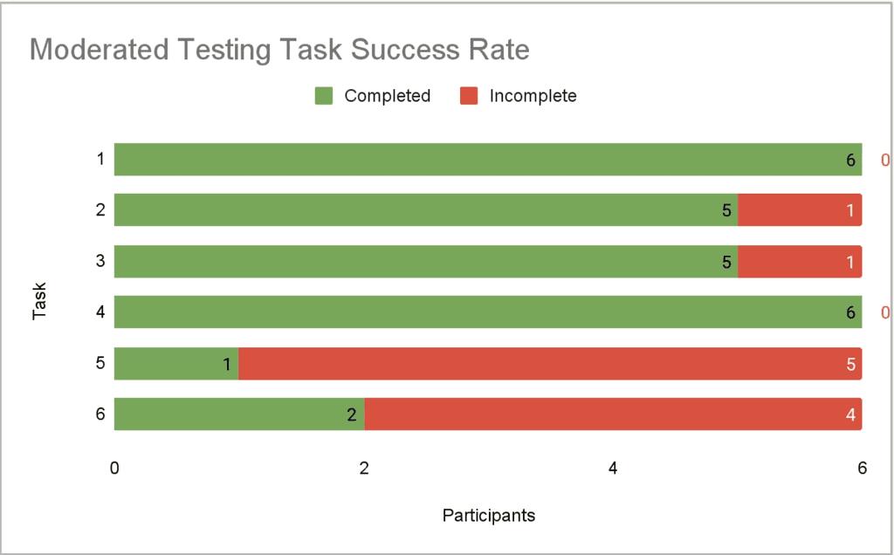
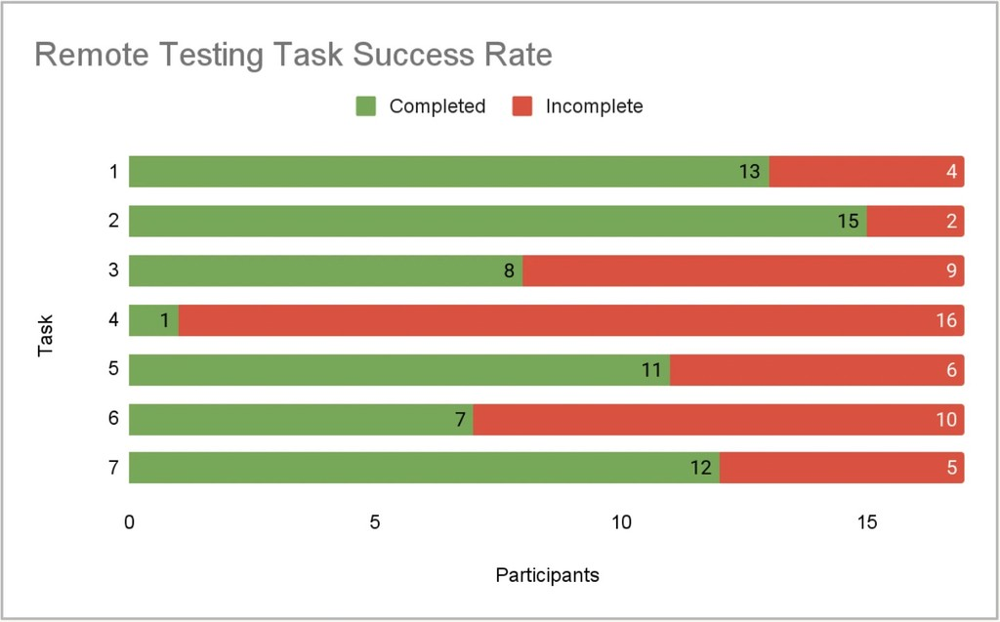
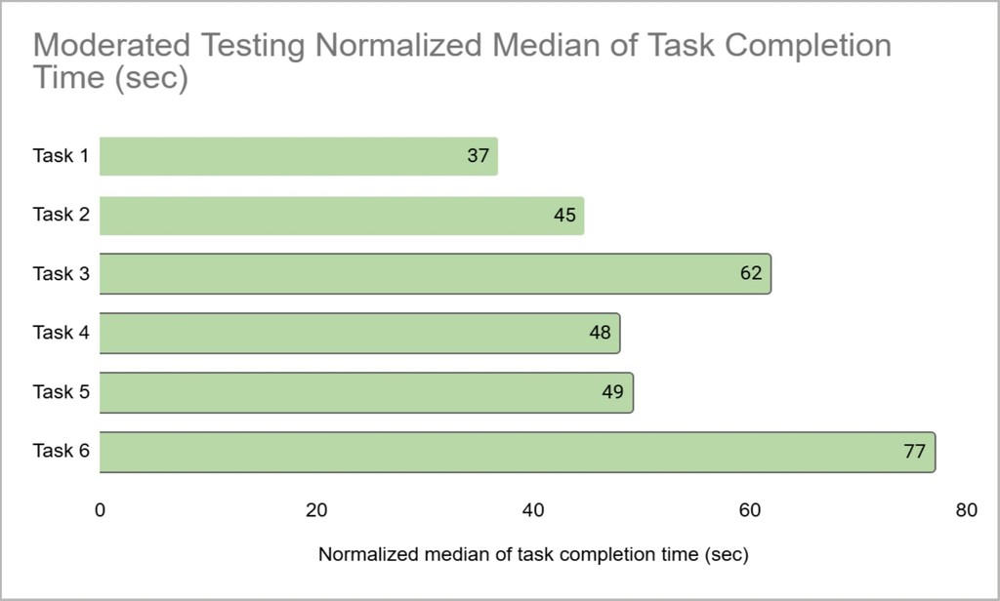
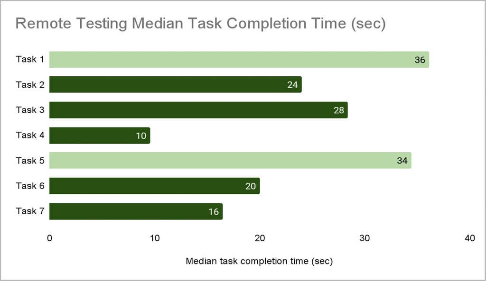
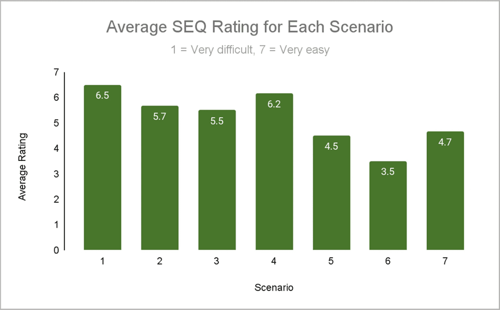
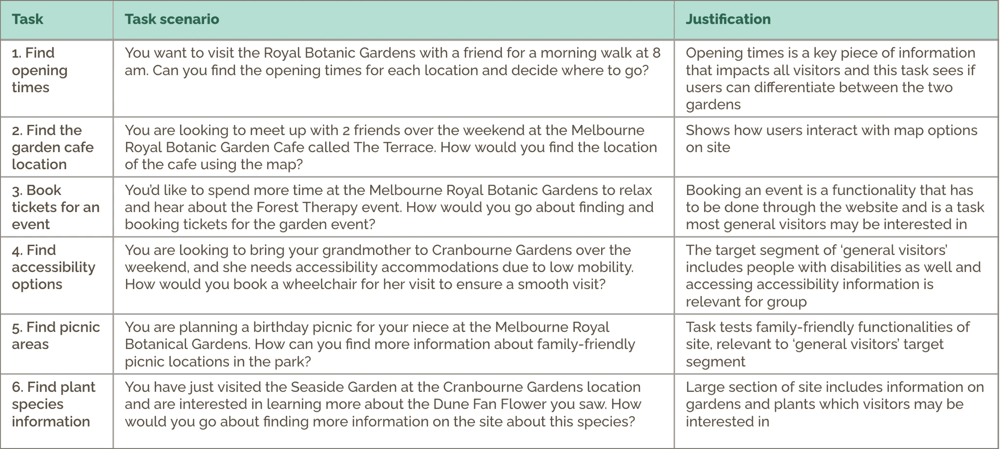
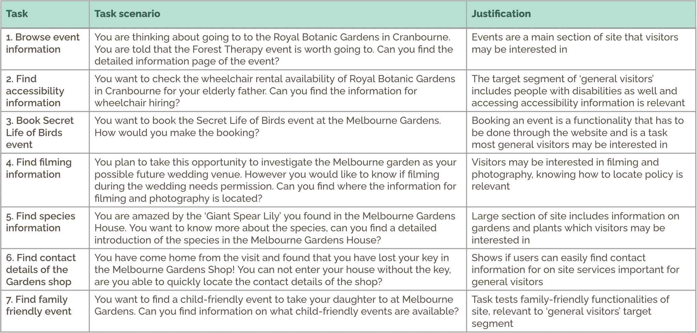

Problem
The Royal Botanic Gardens Victoria website presented significant usability barriers for general visitors, with task success rates falling well below the industry benchmark of 80% across both moderated and remote testing.
Case Study
Improving planning confidence for visitors by identifying usability breakdowns and producing practical, evidence-based recommendations.

The Royal Botanic Gardens Victoria website presented significant usability barriers for general visitors, with task success rates falling well below the industry benchmark of 80% across both moderated and remote testing.
We conducted a mixed-method usability study combining moderated in-person testing with 6 participants and remote tree testing via UsabiliTree with 17 participants.
The website revealed 5 key findings around ambiguous navigation labels, missing features, insufficient service information, poor visibility, and unintuitive information placement. Each issue was paired with actionable design recommendations.
The core question driving this project was whether the RBG website was well-designed for general visitors in terms of both effectiveness and efficiency.
We operationalised this through three objectives:
The challenge was to understand exactly where and why the navigation was breaking down for users.
Effectiveness (moderated)
69%
Effectiveness (remote)
56.3%
SUS
71.7
SEQ
5.2





Replace unclear labels with terms that match visitor mental models and intent.
Improve findability for events, spaces, and map-heavy content with filter/search support.
"I would like to see a list of event in a single place or a list of spaces in a single place that have a short filtering searching feature... And also for the live interaction map, I would like to see a search keyword text input there."
"That's a lot of gardens...They are not alphabetically sorted...So I just had to read every single label to navigate through it. Took quite a while."
Add practical planning details directly where users make decisions.
"...I can only book it for up to three hours... if I need to visit for, like, five hours, then I would need to contact them or, like, do something differently.."
"There's not really any picnic information... I can't really find a way to like, see if there's a way I can do a picnic or not in the garden... but I don't know if like, I am permitted or not to do a picnic there."
Make accessibility and service details visible at key navigation and page entry points.
"There's just one thing about when I get into the map is that that hyperlink of the map, it's quite small and easy to miss if I don't like look clearly."
"I would expect it to be on that gray card in here... I would expect some sort of accessibility information on this card."
Surface policy and family-planning details on the specific pages where users expect them.
The study was designed using two complementary methods to capture both behavioural and attitudinal data.
For moderated testing, we recruited 6 university student participants and ran one-on-one sessions in a quiet room, where a facilitator guided each participant through 7 real-world tasks while an observer recorded completion times and outcomes. Participants rated each task using the Single Ease Questionnaire, and completed the System Usability Scale at the end. Sessions were recorded via OBS for later review.

For remote testing, we used the UsabiliTree platform to conduct tree testing with 17 participants. Participants were given scenario-based tasks that mirrored how a general visitor would navigate the site, without the use of search functions, so we could isolate the navigability of the website's information architecture.

Qualitative data from moderated sessions was analysed through transcript coding using the Rogers et al. (2023) usability criteria, then grouped into themes via affinity mapping. Quantitative data from both methods (including success rates, median task times, SEQ scores, and SUS scores) was collated in Excel and benchmarked against established usability standards.
Rogers, Y., Sharp, H., & Preece, J. (2023). Interaction design: Beyond human-computer interaction (6th ed.). John Wiley & Sons.
At the end of the project, I achieved the following:
This project strengthened my ability to design and execute rigourous user research, particularly in how to scope a study, define measurable objectives, and translate raw findings into actionable design recommendations. I also gained hands-on experience with usability tools like UsabiliTree and measurement frameworks like the SEQ and SUS, which I can now apply confidently in future UX projects.
Working within a group also developed my skills in collaborative planning, task delegation, and synthesising different perspectives into a cohesive output.